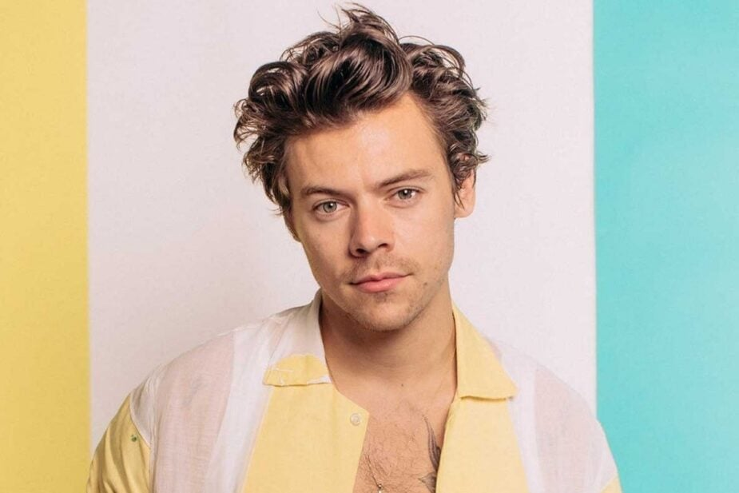
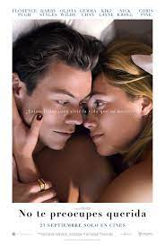
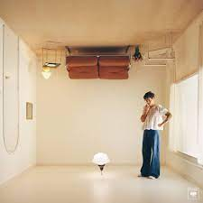
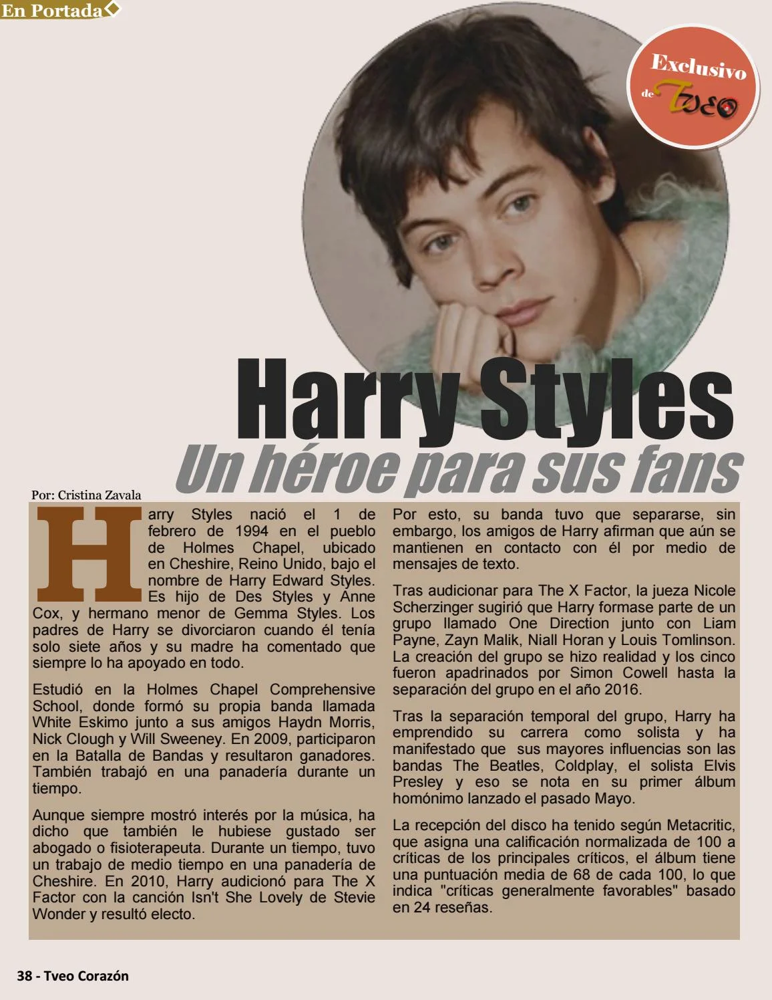
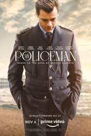
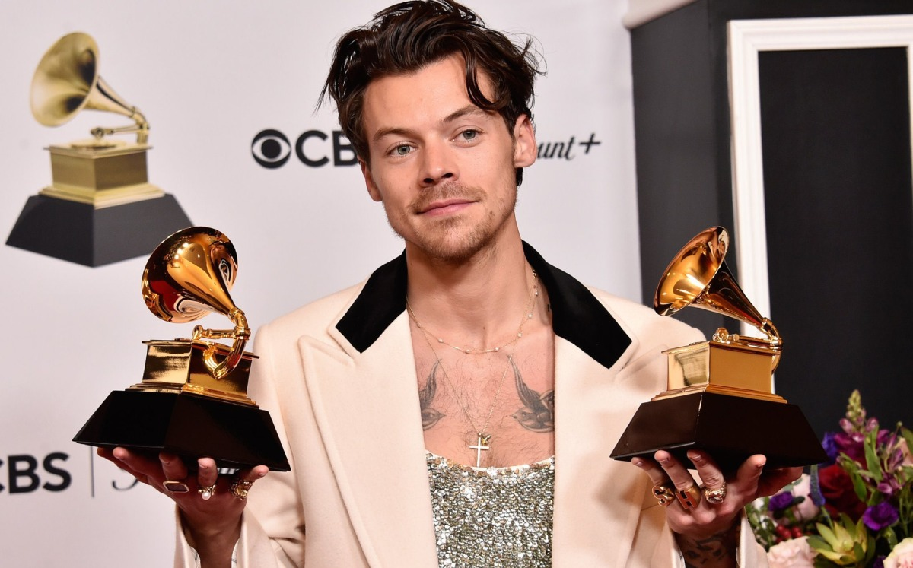

Mi artista favorito y
Mi artista favorito y sus logros


| HARRY STYLES | Noticias | Peliculas | ||
|---|---|---|---|---|
|  | Harry Styles es un cantante compositor y actor, nacido en Inglaterra, nacio el 1 de febrero de 1994,inicio su carrera en 2010 en la famosa banda One Direction, la cual despues de disolverse comenzo su carrera personal la cual comoenzo en 2017 con su primer album en solitario, despues en 2022 con su 3er album logro hacer uno de los Tours mas exitosos de la historia, el cual fue el "Harry House Tour", tal vez conozca la cancion de As It Was. | |
 | |
|  | Su discografia se compone de 3 albumes, los cuales son HARRY STYLES FINE LINE HARRY'S HOUSE ENTRE ESTOS SALIERON, 12 DE MAYO DE 2017, 13 DE DICIEMBRE DE 2019 Y 20 DE MAYO DE 2022, ENTRE LOS 3 ALBUMS SE ENCUENTRAN 35 CANCIONES Y 2 SINGLES MAS LOS CUALES SON "GIRL CRUSH Y TWO GHOST", DE LAS CANCIONES MAS POPULARES DE LOS ALBUMES ESTAN: HARRY STYLES- TWO GHOSTS, KIWI Y EVER SINCE NEW YORK FINE LINE- ADORE YOU, GOLDEN. FALLING, Y WATERMELON SUGAR HARRY'S HOUSE- AS IT WAS, DAYLIGHT, SATELLITE Y LATE NIGTH TALKING. |  |  | |
|  | Entre los premios que ah ganado durante su carrera estan: premios MTV, premio al mejor videoclip por sing of the times, premio al artista del año, premio al mejor album britanico, entre ellos los 3 mas importantes fueron los 3 grammys 2 de ellos recibio en 2022 por mejor cancion y mejor album del año. | |||
| Sus canciones principales son: AS IT WAS, LATE NIGTH TALKING, SONG OF THE TIMES, GOLDEN, ADORE YOU, TWO GHOSTS SATELLITE | ||||